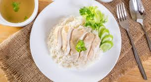

Chicken Rice
credit: me

Description
the singaporean staple, chicken rice is a must try on any tourist's bucket list. Its fragrant aromas and flavours hold a soothing taste that holds numerious memories for all singaporeans.
Ingredients
- Chicken: For the chicken part of chicken rice
- Rice: For the rice section
- Sauses: To make the food yummy
Steps
- Cook the chicken Perferably until it is no longer raw and pink.
- Cook the rice. Pots and ricecookers are viable options.
- Season with sauses. Trust your instincts here.
Back to Home